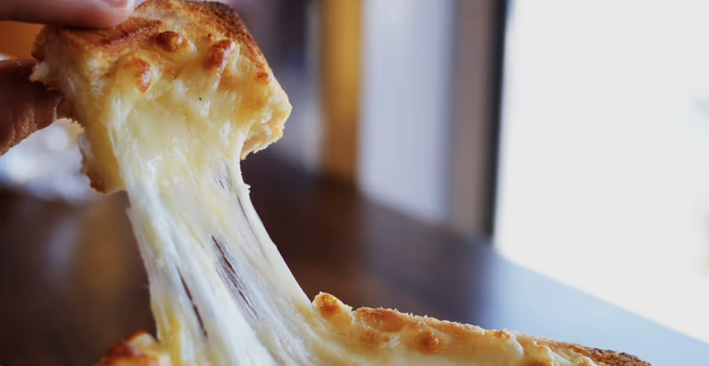
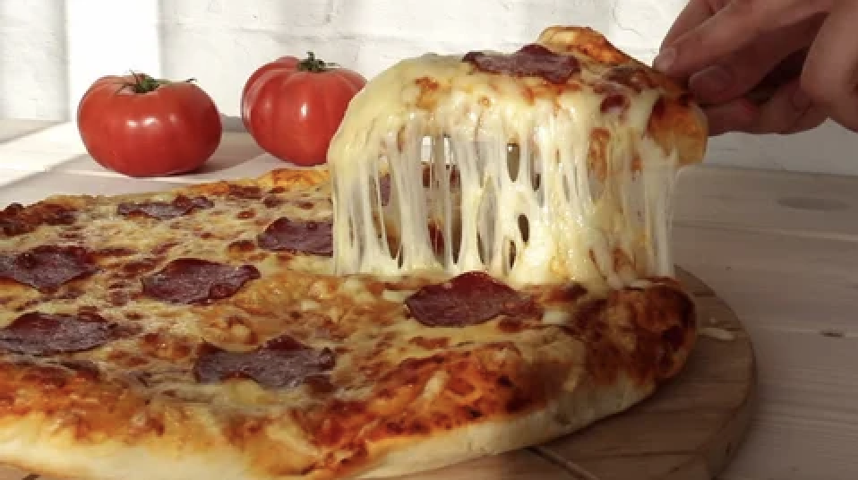
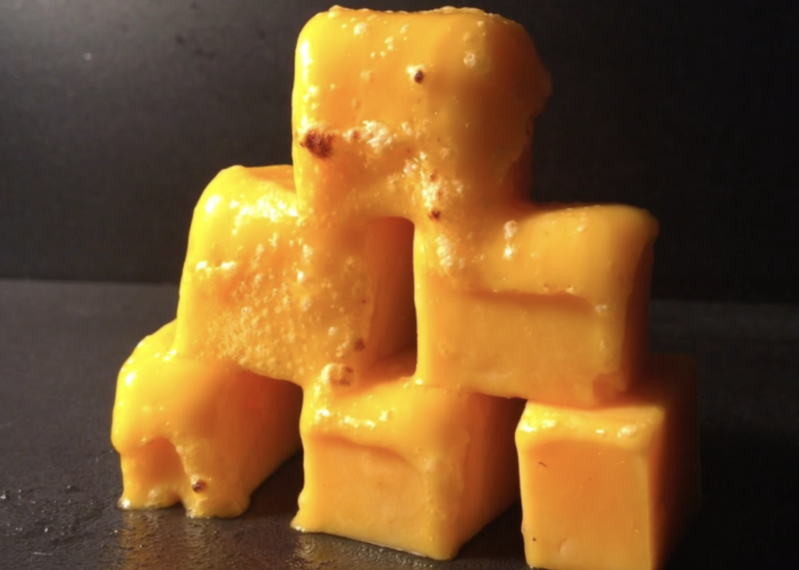

|
 |
|
|
We created a physically accurate and artistically pleasing simulation of melted cheese, inspired by the entertainment appeal and practical applications in advertising and material modeling. Our simulation captures the gooey, elastic behavior of cheese under heat and interaction.
The problem we are solving is creating a physically accurate and artistically pleasing simulation/animation of melted cheese. Melted cheese acts as an elastic body which is different from a mass-spring system but not quite a fluid. We solve this problem by implementing a particle-based volume described in a referenced paper. This problem is important because it can be used in animations for entertainment, as well as physically accurate simulations for engineering or other purposes.
It is important to focus on the interaction between the cheese particles—physical interaction to show a realistic view of how cheese interacts with bodies around it. We focused on collision algorithms for the cheese with different types of primitives such as plates, forks, and more.
There are several challenges with simulating the cheese such as elasticity and variance on how fluid the cheese would be. For example, the edges of the cheese may become more brittle after a long time exposed to a heat source due to the oil in the cheese which acts as a frying/sticking component. This is different from the cheese in the center which will have the most elasticity due to the cheese particles surrounding it. When simulating the cheese pull from the center, this difference in elasticity was taken into account.
The goal of our project is to create a system that can simulate images like these: (e.g., cheese pulls, melting blocks of cheese)
|

|

|

|
We aimed to deliver a simulation of elastic fluids like melted cheese. That means getting a particle simulator working that constrains the particles to act like a mix of a solid and a liquid. The cheese should be able to interact with solid objects. For example, the actual bread part of a pizza slice can just be considered a movable solid.
We included settings like density and viscosity, then tuned these settings to get the material to act like real-life cheese, including “stringiness,” which is the most desired property of a good cheese pull. Finally, we used shaders to get the textures and lighting working to actually render nice images of cheese on pizza and by itself.
We allowed the “temperature” of the cheese to change over time, so we could see it actually melt and become more “loose.” Taking this idea even further, we simulated the real-life effect where melted cheese crisps up if heat is continued to be applied, creating “cheese crisps,” where the edges are crispy but the center is still gooey.
We used a particle-based system (Phyxels: Physical Elements) instead of mass-spring meshes for better elasticity. Each Phyxel contains position, mass, support radius, volume, and density, efficiently handled with spatial hashing.

We began with a complex elasticity simulation based on continuum mechanics but transitioned to a simpler Hookean spring model. This included gravity, collisions, and temperature-based damping/stretching for realism.
Implemented marching cubes to convert point masses into a mesh, using a distance-based field function F and triangulation tables.
We designed custom shaders:
Simulates melting based on temperature. The cheese visibly deforms and flows as it heats.
Includes simulation of cheese interacting with a rod. Despite initial rendering issues, the physics shows the rod’s influence.
We had an awesome time working on this project and hope you have a cheese-tastic day!
We extended the Homework 4 cloth simulator for this project, as it already contained the basic structure of a particle simulation. Our project involved completely rewriting the physics of the particles to behave as a semi-liquid and updating the shading model to render the cheese surface realistically.